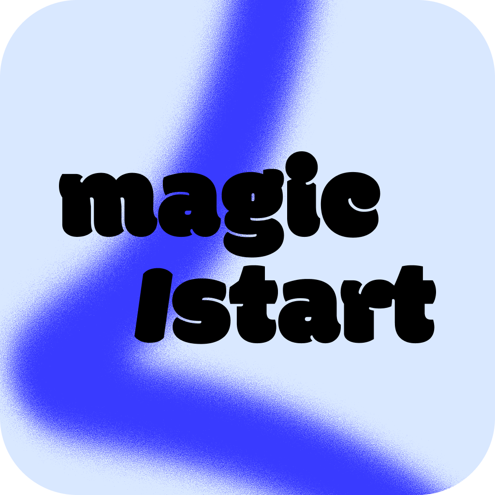
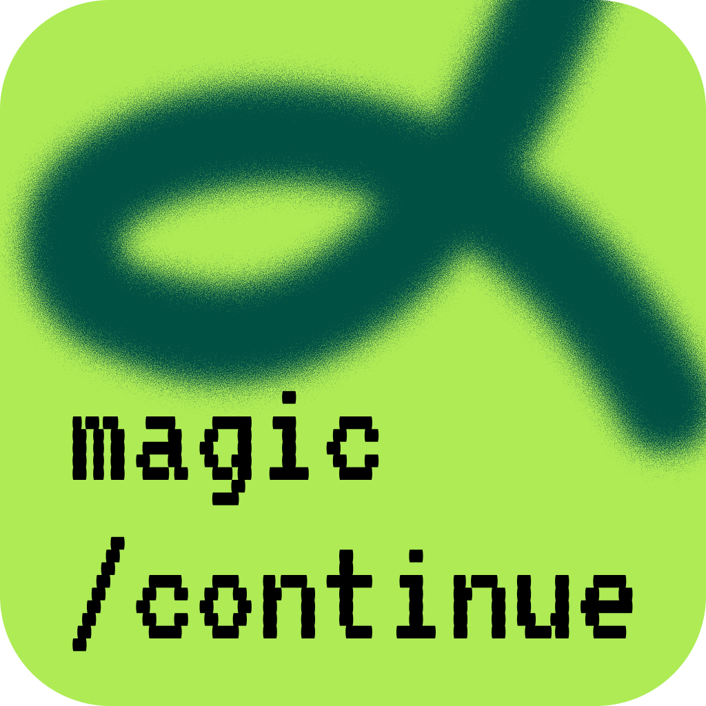
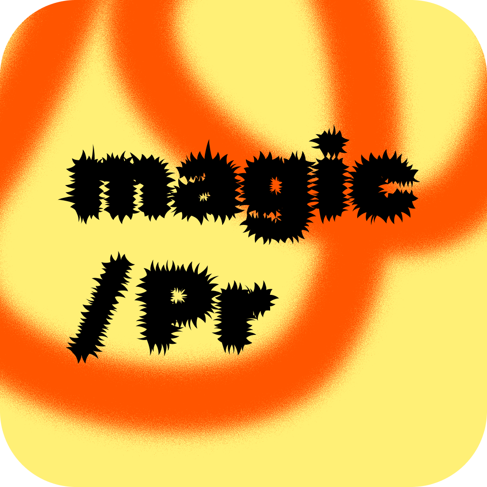

Documentation
Everything you need to get started with magic-slash.
Quick Start
Install magic-slash with a single command:
curl -fsSL https://magic-slash.io/install.sh | bashThe installer checks prerequisites, configures MCP servers (Jira & GitHub), and installs the seven core skills into ~/.claude/skills/.
Prerequisites
Claude Code
The Anthropic CLI must be installed and authenticated.
Node.js ≥ 18
Required for MCP servers (Atlassian & GitHub).
Git + jq
Git for version control, jq for JSON processing.
The installer sets up the 7 core skills, configures MCP servers (Jira & GitHub), and installs the magic-slash Desktop app.
Usage
The typical workflow follows four steps. Start by referencing your ticket ID — magic-slash handles the rest.
> /magic:start PROJ-142
✓ Fetched ticket: "Add JWT auth middleware"
✓ Created worktree: /projects/api-PROJ-142
✓ Branch feature/PROJ-142 created
✓ Ticket moved to "In Progress"
... you write code ...
> /magic:commit
✓ Staged 4 files (excluded .env.local)
✓ feat(auth): add JWT token refresh mechanism
> /magic:pr
✓ Pushed to origin/feature/PROJ-142
✓ PR #87 created — linked to PROJ-142
✓ Ticket moved to "To be reviewed"
... PR gets reviewed ...
> /magic:review 87
✓ Fetched PR #87 (3 files, +10 −1)
✓ Approved with 2 suggestions
> /magic:resolve
✓ 2 comments addressed — 2 files updated
✓ Force-pushed to origin/feature/PROJ-142
... PR is merged ...
> /magic:done
✓ PR #87 merged
✓ Branch feature/PROJ-142 deleted
✓ Ticket moved to "Done"Resuming work
Already started a ticket? Use /magic:continue to pick up where you left off.
> /magic:continue PROJ-142
✓ Worktree found: /projects/api-PROJ-142
✓ Branch: feature/PROJ-142 (3 commits ahead)
✓ PR #87 (open)
Ready to continue. What would you like to do?Ticket formats
magic-slash accepts both Jira and GitHub ticket identifiers:
Jira
Alphabetic prefix + hyphen + digits: PROJ-123, ABC-456. Uses the MCP Atlassian server to fetch ticket data.
GitHub
A number, optionally prefixed with #: 123, #456. Searches all configured repos for the matching issue.
Bilingual support
Every user-facing message supports English and French. You can configure the language independently for each context:
{
"languages": {
"discussion": "fr", // Agent responses
"commit": "en", // Commit messages
"pullRequest": "fr", // PR descriptions
"jiraComment": "en" // Jira comments
}
}Built-in Skills Reference
magic-slash ships with seven built-in skills that cover the full development lifecycle — from ticket to merge. Each skill is invoked as a slash command inside Claude Code and handles multi-repo worktrees automatically.
All skills share the magic: prefix (/magic:start, /magic:continue, /magic:commit, /magic:pr, /magic:review, /magic:resolve, /magic:done) so you can type /magic: to quickly find them all.

/magic:start Lifecycle SourceBootstraps a development task from a Jira ticket or GitHub issue. Say /magic:start PROJ-123 or /magic:start #456.
What it does
- Detects ticket type (Jira or GitHub) and fetches metadata
- Scores configured repos by keyword relevance to pick the right one
- Creates a Git worktree and feature branch (
feature/PROJ-123) - Moves the ticket to "In Progress"
- Explores the codebase, generates an implementation plan, and waits for your approval before coding
Trigger phrases
/magic:start <ID>- "start", "begin work on", "work on ticket"
- "commencer", "travailler sur", "demarre"
Multi-repo
If the ticket spans multiple repos, magic-slash creates worktrees for each and links them together with a shared context file.

/magic:continue Lifecycle SourceResumes work on an existing Jira ticket or GitHub issue. Say /magic:continue PROJ-123 or /magic:continue #456.
What it does
- Detects ticket type (Jira or GitHub) and fetches metadata
- Searches for existing worktrees across all configured repos
- Falls back to branch search (local then remote) if no worktree found
- Creates a worktree from the branch if needed
- Checks for an existing open PR and reports its status
- Displays a quick summary: commits, modified files, PR link
Trigger phrases
/magic:continue <ID>- "continue", "resume work on", "switch to"
- "reprendre", "je reprends", "basculer sur"
Multi-repo
If worktrees exist in multiple repos for the same ticket, asks which one or "all" and links them with full-stack context.
/magic:commit Git Source
Creates atomic, conventional commits by analyzing your staged changes. Just say /magic:commit.
What it does
- Stages all safe files (excludes
.env, credentials, keys) - Analyzes the diff and detects if changes should be split into multiple atomic commits
- Generates a message following your configured format (angular, conventional, gitmoji, or freeform)
- Handles pre-commit hook failures with automatic corrections (formatting, linting)
Configuration
commit.format— angular, conventional, gitmoji, nonecommit.style— single-line or multi-linelanguages.commit— en or frcommit.coAuthor— add Co-Authored-By trailercommit.includeTicketId— append ticket ID

/magic:pr Lifecycle SourcePushes your commits, creates a pull request, and updates the ticket. Say /magic:pr when you are finished coding.
What it does
- Pushes the feature branch to the remote
- Creates a PR using your project template or a default one
- Auto-links the Jira/GitHub ticket in the PR description
- Transitions the ticket to "To be reviewed"
- Adds a comment on the ticket with the PR link
Configuration
languages.pullRequest— PR language (en / fr)languages.jiraComment— Jira comment languagepullRequest.autoLinkTickets— add ticket linksissues.commentOnPR— comment on the ticket
Multi-repo
Creates one PR per worktree, then updates the ticket once with links to all PRs.
/magic:review Review Source
Performs a thorough code review on a pull request. Say /magic:review for the current PR or /magic:review 87 for a specific one.
What it does
- Detects self-review (your own PR) vs. external review and adapts accordingly
- Fetches the PR diff and reads changed files in full context
- Checks code quality, logic, security, performance, and conventions
- Submits a GitHub review with inline comments
- Does not modify any files — read-only
Trigger phrases
/magic:review,/magic:review 87- "review", "code review", "review the PR"
- "revue de code", "regarde la PR", "vérifie ma PR"
/magic:resolve Review Source
Addresses code review feedback by fixing the requested changes and force-pushing. Say /magic:resolve after receiving review comments.
What it does
- Fetches unresolved review comments from the PR
- Applies the requested fixes to the codebase
- Amends the relevant commits to keep history clean
- Force-pushes the updated branch
- Replies to each resolved comment on GitHub
Trigger phrases
/magic:resolve- "resolve", "fix review comments", "address feedback"
- "résoudre", "corriger les commentaires", "traiter les retours"
/magic:done Lifecycle Source
Finalizes a task after the PR has been merged: verifies the merge, transitions the Jira ticket to "Done", and cleans up. Say /magic:done once the PR is merged.
What it does
- Verifies the PR has been merged
- Transitions the Jira ticket to "Done"
- Adds a final comment on the ticket with the merge link
- Updates desktop agent metadata
- Does not modify any code files — post-merge only
Trigger phrases
/magic:done- "the PR is merged", "close the ticket", "task is done"
- "la PR est mergée", "fermer le ticket", "tâche terminée"
Note
Do not use this to create a PR — use /magic:pr instead. This skill is only for post-merge finalization.
Custom Skills
Beyond the built-in skills, you can create your own custom skills directly from the magic-slash desktop app. This lets you tailor your workflow with personalized slash commands.
Create your own Custom
Open the desktop app, navigate to the Skills tab, and click New skill to create a custom slash command. Fill in the form, hit Save, and your skill is instantly available in Claude Code as /your-skill.
How to add a skill
- Open the magic-slash desktop app
- Go to the Skills tab
- Click New skill (or the empty-state placeholder)
- Fill in the fields and write your instructions
- Click Save — immediately usable as
/your-skill
Fields
name— the slash command name (lowercase, numbers, hyphens only)description— when the skill should be triggeredallowed tools— which tools the skill can use (e.g.Bash(*), Read, Edit)content— the instruction prompt in Markdownimage— an optional icon for the skill card (png, jpg, svg, webp)
Workflow Examples
End-to-end recipes for common development scenarios. Each workflow shows the exact commands to run in sequence.
Simple bug fix
The most common workflow: pick up a bug ticket, fix it, ship it.
Steps
/magic:start BUG-42
... fix the bug ...
/magic:commit
/magic:pr
... wait for review ...
/magic:doneWhat happens
- Worktree + branch created, ticket moves to "In Progress"
- Changes committed with a
fix(...)message - PR created, ticket moves to "To be reviewed"
- After merge: branch cleaned up, ticket moves to "Done"
Feature with self-review
Build a feature, review your own PR before requesting external review.
Steps
/magic:start FEAT-101
... implement feature ...
/magic:commit
/magic:commit
/magic:pr
/magic:review
... fix issues found ...
/magic:commit
... request external review ...
/magic:doneTips
- Multiple
/magic:commitcalls create atomic, focused commits /magic:reviewon your own PR catches issues before others see them- Commit again after fixing self-review findings, then ask for external review
Full-stack multi-repo
A feature that spans both backend and frontend repositories.
Steps
/magic:start FEAT-200
✓ Matched: api-repo + web-repo
✓ Worktrees created for both
... implement backend ...
/magic:commit
... implement frontend ...
/magic:commit
/magic:pr
... PRs created for both repos ...
/magic:doneHow it works
- Keyword scoring matches the ticket to multiple repos
- Separate worktrees and branches are created for each
- PRs are linked together and to the same ticket
- The Desktop app groups them in the sidebar
Resume work on a ticket
Pick up where you left off — next day, different machine, or after a context switch.
Steps
/magic:continue PROJ-142
✓ Worktree found
✓ Branch: feature/PROJ-142 (3 commits ahead)
✓ PR #87 (open, 1 comment)
... continue coding ...
/magic:commit
/magic:resolve
... review comments addressed ...What continue provides
- Full context: branch status, existing PR, pending comments
- Automatic
cdinto the existing worktree - Use
/magic:resolveto address review comments in one step
External PR review
Review a colleague's pull request with detailed, actionable feedback.
Steps
/magic:review 87
✓ Fetched PR #87 (12 files, +340 −42)
✓ Review: 1 blocker, 3 suggestions, 2 nits
✓ Submitted as "Changes Requested"Review quality
- Analyzes every changed file in the diff
- Categorizes comments by severity (blocker, suggestion, nit)
- Posts inline comments directly on the relevant lines
- Submits an overall review verdict (approve / request changes)
Best Practices & Tips
Get the most out of magic-slash with these practical recommendations.
Write descriptive tickets
The quality of magic-slash's output depends heavily on ticket content. Better tickets lead to better branches, commits, and PRs.
Do
- Use clear, specific titles: "Add rate limiting to /api/auth endpoints"
- Add relevant labels (e.g.
backend,ui) — they score +10 pts for repo matching - Include acceptance criteria in the description
Avoid
- Vague titles: "Fix the thing" — poor keyword matching
- Empty descriptions — magic-slash uses them for context
- Missing labels — reduces repo detection accuracy
Commit often & small
/magic:commit works best with focused, atomic changes. Run it after each logical unit of work rather than once at the end.
Good patterns
- One commit per feature/concern (e.g. model, controller, tests)
- Separate refactoring commits from functional changes
- magic-slash detects and excludes sensitive files (
.env, credentials) automatically
Why it matters
- Smaller diffs = more accurate commit messages
- Easier to review and revert individual changes
- Pre-commit hooks run on each commit, catching issues early
Self-review before requesting review
Run /magic:review on your own PR before asking a colleague. It catches common issues and improves code quality before the first human review.
Benefits
- Catches forgotten TODOs, dead code, missing error handling
- Flags style inconsistencies and potential bugs
- Reduces back-and-forth with reviewers
Workflow
/magic:pr
/magic:review
... fix findings ...
/magic:commit
... then request human reviewTune your keywords
Repository matching is only as good as your keyword configuration. Review and adjust keywords as your project evolves.
Tips
- Use domain-specific terms:
checkout,payments,auth - Include technology names:
react,graphql,postgres - Add team names or component names used in your Jira labels
- Avoid overly generic words:
code,update,fix
Test it
If magic-slash selects the wrong repo, check which keywords matched and adjust. Add the label or term that would have made the correct match obvious.
Use worktree files for environment setup
Configure worktreeFiles in your repository settings to automatically copy untracked files (.env, .npmrc, etc.) into new worktrees.
Configuration
"my-repo": {
"path": "/projects/my-repo",
"worktreeFiles": [
".env",
".env.local",
".npmrc"
]
}Why
- New worktrees are clean checkouts — untracked files are not included
- Without
.env, your app may fail to start in the worktree - Files are copied from the main repo, not committed to Git
Configuration
magic-slash is configured via a single JSON file at ~/.config/magic-slash/config.json. Settings can be defined globally or overridden per repository.
Full config example
{
"version": "0.37.2",
"repositories": {
"my-frontend": {
"path": "/Users/dev/projects/my-frontend",
"keywords": ["frontend", "ui", "react", "amplify"],
"color": "#3B82F6",
"languages": {
"discussion": "fr",
"pullRequest": "fr",
"jiraComment": "fr"
},
"commit": {
"coAuthor": false,
"includeTicketId": true
},
"branches": {
"development": "develop"
},
"issues": {
"jiraUrl": "https://myteam.atlassian.net/browse/"
}
},
"my-api": {
"path": "/Users/dev/projects/my-api",
"keywords": ["backend", "api", "lambda", "serverless"],
"color": "#EF4444",
"languages": {
"discussion": "fr",
"pullRequest": "fr",
"jiraComment": "fr"
},
"commit": {
"includeTicketId": true,
"coAuthor": false
},
"branches": {
"development": "develop"
},
"issues": {
"jiraUrl": "https://myteam.atlassian.net/browse/"
}
},
"my-tools": {
"path": "/Users/dev/projects/my-tools",
"keywords": ["tools", "cli", "scripts"],
"color": "#8B5CF6",
"languages": {
"discussion": "fr"
},
"commit": {
"coAuthor": false
},
"branches": {
"development": "main"
},
"issues": {
"commentOnPR": false,
"githubIssuesUrl": "https://github.com/myorg/my-tools"
}
}
},
"agents": [
{
"id": "claude-1770400971763",
"name": "Claude 1",
"repositories": ["/Users/dev/projects/my-frontend"],
"tsCreate": 1770400971818,
"metadata": {
"title": "Add user dashboard",
"branchName": "feature/PROJ-42-user-dashboard",
"ticketId": "PROJ-42",
"description": "Create the main user dashboard with activity feed and stats.",
"status": "PR created",
"fullStackTaskId": "",
"relatedWorktrees": [],
"repositoryMetadata": {
"/Users/dev/projects/my-frontend": {
"prUrl": "https://github.com/myorg/my-frontend/pull/156"
}
}
}
},
{
"id": "claude-1770589955009",
"name": "Claude 2",
"repositories": [],
"tsCreate": 1770589955032,
"metadata": {
"title": "",
"branchName": "",
"ticketId": "",
"description": "",
"status": "",
"fullStackTaskId": "",
"relatedWorktrees": [],
"repositoryMetadata": {}
}
}
]
}Repository settings
Each repository entry defines its local path and keyword list. Keywords are used by /magic:start to automatically match tickets to the right repo.
Repository fields
path— Absolute path to the repo rootkeywords— Array of terms matched against ticket labels, components, title, and descriptioncolor— Hex color for the repo badge in the desktop app (e.g."#3B82F6")
Scoring algorithm
- Jira label/component match → +10 points
- GitHub label match → +10 points
- Keyword in title → +5 points
- Keyword in description → +2 points
Commit settings
Options
commit.format—angular(default),conventional,gitmoji, ornonecommit.style—single-line(default) ormulti-linecommit.coAuthor— Add a Co-Authored-By trailer (falseby default)commit.includeTicketId— Append[PROJ-123]to the message (falseby default)
Format examples
- angular —
feat(auth): add login - conventional —
feat: add login - gitmoji —
✨ add login - none — free-form text
Language settings
Each language key can be set globally or per repository. Per-repo values always take priority.
Keys
languages.discussion— Agent responses and promptslanguages.commit— Commit message languagelanguages.pullRequest— PR title and descriptionlanguages.jiraComment— Comments posted on Jira tickets
Supported values
"en"— English (default for all keys)"fr"— French
Priority order
- 1. Per-repo value (
.repositories.api.languages.commit) - 2. Global value (
.languages.commit) - 3. Default (
"en")
Pull request & issue settings
Pull request
pullRequest.autoLinkTickets— Add a "Linked Issues" section with the Jira/GitHub URL (trueby default)
Issues
issues.commentOnPR— Post a comment on the ticket with the PR link (trueby default)issues.jiraUrl— Base URL for Jira (e.g."https://myteam.atlassian.net")issues.githubIssuesUrl— Base URL for GitHub issues (e.g."https://github.com/myorg/my-api")
Branch settings
Options
branches.development— Name of the development branch used as the base for feature branches (defaults to"develop")
Example
"branches": {
"development": "develop"
}File locations
~/.config/magic-slash/config.json # Main configuration
~/.claude/skills/magic-start/SKILL.md # /magic:start skill definition
~/.claude/skills/magic-continue/SKILL.md # /magic:continue skill definition
~/.claude/skills/magic-commit/SKILL.md # /magic:commit skill definition
~/.claude/skills/magic-pr/SKILL.md # /magic:pr skill definition
~/.claude/skills/magic-review/SKILL.md # /magic:review skill definition
~/.claude/skills/magic-resolve/SKILL.md # /magic:resolve skill definition
~/.claude/skills/magic-done/SKILL.md # /magic:done skill definition
~/.claude.json # MCP server settings (Jira & GitHub)Integrations
magic-slash connects to your existing tools through MCP (Model Context Protocol) servers configured during installation.
GitHub MCP
Full GitHub integration via a personal access token. Configured in ~/.claude.json.
Capabilities
- Create and manage pull requests
- Fetch issue details and labels
- Search issues across multiple repos
- Add comments and update issue state
- Branch and repository management
Setup
The installer prompts for a GitHub personal access token with repo scope. The token is stored in the MCP server config at ~/.claude.json.
Jira MCP
Atlassian integration via OAuth for Jira Cloud. Supports ticket fetching, status transitions, and comments.
Capabilities
- Fetch ticket title, description, labels, and components
- Transition tickets between statuses (In Progress, To be reviewed, etc.)
- Add comments with PR links
- Retrieve available transitions dynamically
Setup
The installer guides you through Atlassian OAuth authentication. It opens a browser window to authorize access, then stores the tokens in the MCP config.
Git Native
Direct Git operations via the CLI. No additional configuration needed.
Capabilities
- Worktree creation at the same level as the main repo
- Feature branch creation (
feature/PROJ-123) - Atomic commit splitting
- Pre-commit hook error detection and auto-fix
Branch naming
- Jira:
feature/PROJ-123 - GitHub:
feature/repo-name-123
Worktree location
Worktrees are created alongside the main repo: ../my-api-PROJ-123
Multi-repo & Full-stack
magic-slash natively supports full-stack development across multiple repositories. When a ticket spans several repos, each skill adapts automatically.
How it works
/magic:start
- Scores all configured repos against the ticket keywords
- If multiple repos match, asks you to choose or select "all"
- Creates a worktree in each selected repo
- Generates a
CLAUDE.local.mdcontext file in each worktree listing all related paths
/magic:continue
- Searches all configured repos for worktrees matching the ticket ID
- If multiple worktrees found, asks to choose or select "all"
- Falls back to branch search if no worktree exists
- Detects existing PRs and reports their status
/magic:commit & /magic:pr
- Detects all worktrees sharing the same ticket ID
/magic:commititerates over each worktree that has changes/magic:prcreates one PR per repo, then updates the ticket once with all PR links
Example: full-stack task
> /magic:start PROJ-200
✓ Ticket: "Add user avatar upload"
✓ Matched repos: api (score: 15), web (score: 12)
Which repos? > all
✓ Created /projects/api-PROJ-200
✓ Created /projects/web-PROJ-200
... you implement backend + frontend ...
> /magic:commit
✓ api-PROJ-200: feat(upload): add avatar endpoint
✓ web-PROJ-200: feat(profile): add avatar picker component
> /magic:pr
✓ PR #42 created on org/api
✓ PR #43 created on org/web
✓ Jira PROJ-200 updated with both PR linksContext file
When working on a full-stack task, each worktree gets a CLAUDE.local.md file so Claude keeps context across repos, even when resuming a conversation:
# Full-Stack Context
You are working on ticket **PROJ-200** which spans multiple repos.
## Worktrees for this task
- **Backend**: /projects/api-PROJ-200
- **Frontend**: /projects/web-PROJ-200
## Instructions
- Use `cd` to navigate to the appropriate worktree
- You can work on both repos in a single session
- Make sure changes are consistent across reposDesktop App
magic-slash Desktop is a native Electron app that provides a visual interface on top of the core skills.
Integrated terminals
Embedded Claude Code terminals with full PTY support (xterm.js + node-pty).
Visual tracking
See each agent's status in real time: Idle, Working, Waiting, Completed, or Error.
Repo grouping
Agents are grouped by repository in the sidebar for multi-repo visibility.
Tech stack
Frontend
- Electron 28+
- React 18 with Vite
- Tailwind CSS
- Zustand for state management
Terminal
- xterm.js for rendering
- node-pty for PTY spawning
- Local HTTP API for metadata sync between Claude and the UI
Desktop API endpoints
The desktop app exposes a local HTTP API that skills use to update the UI in real time:
GET /metadata
title— Sidebar titleticketId— Ticket identifierdescription— Short descriptionstatus— in progress, committed, PR createdprUrl— Link to the created PR
GET /repositories
repos— JSON array of absolute paths
Attaches worktrees to the agent for sidebar grouping. Called automatically by /magic:start after creating a worktree.
Hooks & Automation
The Desktop app automatically configures Claude Code hooks in ~/.claude/settings.json. These hooks enable real-time visual tracking in the sidebar — every state change in Claude Code is reflected instantly in the Desktop UI.
Hook events
Six lifecycle events are hooked to track agent activity. Each event maps to a visual state in the sidebar.
Events → States
UserPromptSubmit→ working — User sent a messagePreToolUse→ working — Before tool executionPostToolUse→ working — After tool executionNotification→ waiting — Claude needs user attentionStop→ completed — Claude finished respondingSessionStart→ idle — New session, waiting for input
How it works
Each hook sends an HTTP request to the local status server using environment variables MAGIC_SLASH_PORT and MAGIC_SLASH_TERMINAL_ID, which are injected by the Desktop app into each terminal session.
Hooks are installed once and work across all instances. They are idempotent — re-launching the app re-registers them without duplicates.
Status server
A lightweight HTTP server that bridges Claude Code hooks with the Desktop UI. Runs locally on 127.0.0.1 with a random port per session.
Endpoints
/status— Agent state updates (working, waiting, completed, idle)/metadata— Ticket title, branch, PR URL, description, status/repositories— Worktree attachments for sidebar grouping/command/start— Skill execution started/command/end— Skill execution ended (with exit code)/ping— Health check
Metadata fields
title— Sidebar agent titleticketId— Jira/GitHub ticket identifierbranchName— Current feature branchstatus— in progress, committed, PR createdprUrl+prRepo— PR link per repositoryfullStackTaskId— Multi-repo task grouping
Auto-configured permissions
The Desktop app auto-allows commonly used tools in ~/.claude/settings.json so skills can run without manual permission prompts.
MCP tools
- GitHub —
get_issue,add_issue_comment,update_issue,list_pull_requests,get_pull_request,get_pull_request_files,get_pull_request_comments,get_pull_request_reviews,create_pull_request,create_pull_request_review - Atlassian —
getAccessibleAtlassianResources,getJiraIssue,getTransitionsForJiraIssue,transitionJiraIssue,addCommentToJiraIssue
Bash commands
git *— All git operationsnpm *,yarn *,pnpm *,bun *— Package managersgh *— GitHub CLIjq *— JSON processing*http://127.0.0.1:*— Local server communication
You can review and edit these permissions at any time in ~/.claude/settings.json.
Security & Permissions
magic-slash is designed with a local-first security model. All communication stays on your machine, credentials are managed by external tools, and permissions are explicitly scoped.
Credentials & storage
magic-slash itself does not store any tokens or passwords. Authentication is delegated to MCP servers.
Atlassian (Jira / Confluence)
Uses OAuth authentication managed by the MCP Atlassian server. No API token required — you authenticate via browser during installation.
GitHub
Requires a Personal Access Token (PAT) stored as an environment variable in the MCP GitHub server configuration (~/.claude/settings.json). The token is never read by magic-slash directly.
Local-only communication
The status server that bridges Claude Code and the Desktop UI is strictly local.
Network binding
- Binds exclusively to
127.0.0.1— not accessible from the network - Uses a random port per session — no fixed port exposure
- Port is passed to terminals via environment variables, not stored on disk
Data flow
Claude Code hooks → HTTP requests to 127.0.0.1:PORT → Status server → Desktop UI (via IPC)
No data is sent to external servers by the Desktop app. MCP servers handle their own external communication (GitHub API, Jira API).
Permission model
Permissions are explicitly scoped — no blanket access is granted.
Scope
- Each permission targets a specific tool category (e.g.
Bash(git *)allows git commands only) - MCP tools are listed individually — only the tools skills actually use are allowed
- No
Bash(*)blanket permission is ever configured
Review & customization
- All permissions are stored in
~/.claude/settings.jsonunderpermissions.allow - You can remove, add, or modify any permission at any time
- Uninstalling magic-slash removes all auto-configured permissions
Updates & Auto-Update
magic-slash keeps both the Desktop app and the 7 core skills up to date automatically.
Desktop app updates
The Desktop app uses electron-updater to check for new versions via GitHub Releases.
Update flow
- Checks for updates automatically on startup (after a 1-second delay)
- If an update is available, downloads it in the background
- Once downloaded, cleans up terminals and status server
- Installs the update and restarts the app automatically
What's New
After an update, a "What's New" dialog shows the release notes for the new version. Release notes are fetched from the GitHub Release page.
The dialog appears once per update and can be dismissed.
Skills auto-update
Skills are updated independently from the Desktop app. On startup, the app checks for changes to skill files on GitHub.
How it works
- Fetches the repository file tree from GitHub API
- Compares each skill file with the local version in
~/.claude/skills/ - Downloads changed files (text and binary)
- Removes obsolete local files that no longer exist in the repository
- Cleans up empty directories
Scope
All 7 built-in skills are checked: magic-start, magic-continue, magic-commit, magic-pr, magic-review, magic-resolve, magic-done.
Custom skills you create are never modified or removed by the auto-updater.
Manual update check
You can trigger an update check at any time from the Desktop app.
From the app
Open Settings and click Check for updates. The current version is displayed in the sidebar and on the Settings page.
Re-install
You can also re-run the installer at any time to update skills and reconfigure MCP servers:
curl -fsSL https://magic-slash.io/install.sh | bashSupported Environments
magic-slash works anywhere Claude Code runs. Here is a summary of supported platforms, editors, and toolchains.
Operating systems
Supported platforms for both the skills (CLI) and the Desktop app.
Skills (Claude Code)
- macOS — Full support (Intel + Apple Silicon)
- Linux — Full support (x64, arm64)
- Windows — Via WSL 2 (Windows Subsystem for Linux)
Desktop app
- macOS — Native app (.dmg, .zip), universal binary
- Linux — AppImage, .deb
- Windows — .exe installer, portable
Editors & terminals
The /magic: skills work in any environment where Claude Code is available.
Supported
- VS Code — Via the Claude Code extension
- JetBrains IDEs — IntelliJ, WebStorm, PyCharm, etc.
- Any terminal — iTerm2, Warp, Alacritty, Windows Terminal, etc.
- magic-slash Desktop — Integrated terminal with sidebar tracking
Requirements
- Claude Code CLI installed and authenticated
- Skills installed in
~/.claude/skills/ - MCP servers configured (GitHub + Atlassian)
Prerequisites
System requirements for running magic-slash.
Required
- Node.js ≥ 20 (see
.nvmrc) - Git ≥ 2.20 (worktree support)
- Claude Code CLI installed and authenticated
Optional
- GitHub CLI (
gh) — Used during installation for token setup - jq — Used by the installer to parse JSON config
Package managers & languages
magic-slash auto-detects your project's package manager and installs dependencies accordingly in new worktrees.
JavaScript / TypeScript
bun.lockb/bun.lock→ bunyarn.lock→ yarnpnpm-lock.yaml→ pnpmpackage-lock.json→ npm
Other languages
requirements.txt→ pippoetry.lock→ poetryCargo.toml→ cargogo.mod→ goGemfile.lock→ bundlercomposer.lock→ composer
FAQ & Troubleshooting
Common questions and issues, and how to resolve them.
Configuration not found
Every skill checks for ~/.config/magic-slash/config.json before running. If missing, you will see an error.
Fix
Re-run the installer or create the file manually with at least one repository entry.
Minimal config
{
"version": "0.37.2",
"repositories": {
"my-repo": {
"path": "/path/to/repo",
"keywords": ["backend"]
}
}
}Worktree already exists
/magic:start detects existing worktrees and offers three options: reuse, recreate, or abort.
Options
- Reuse (recommended) — cd into the existing worktree and continue
- Recreate — Remove and recreate the worktree from a fresh branch
- Abort — Cancel the operation
Manual cleanup
cd /path/to/main-repo
git worktree remove ../repo-PROJ-123Pre-commit hook failures
/magic:commit handles hook errors automatically based on severity.
Auto-fixed (level 1-2)
- Formatters (Prettier, Black, gofmt)
- Linters with auto-fix (ESLint --fix, Rubocop)
Re-staged and retried automatically up to 3 times.
Manual intervention (level 3)
- Type errors (TypeScript, mypy)
- Failing tests
- Secrets detected, files too large
You are prompted to fix manually, skip the check, or abort.
Jira transition not available
If magic-slash cannot move a ticket to "In Progress" or "To be reviewed", it displays a warning and continues without blocking.
Common causes
- The transition name differs in your Jira workflow
- Insufficient permissions on the project
- The ticket is already in the target status
Fallback names
magic-slash tries these names in order:
- "In Progress", "En cours", "In Development", "Started"
- "To be reviewed", "In Review", "Code Review", "Review"
MCP server connection failed
If a skill fails with an MCP connection error, the Atlassian or GitHub MCP server is unreachable.
Common causes
- Expired or revoked GitHub Personal Access Token
- Atlassian OAuth session expired (re-authenticate in browser)
- MCP server not configured — run the installer again
- Network issue or corporate proxy blocking the connection
Verify MCP servers
claude mcp listYou should see both atlassian and github entries. If missing, re-run the installer or add them manually:
claude mcp add atlassian --transport http
claude mcp add github -e GITHUB_PERSONAL_ACCESS_TOKEN="ghp_..."PR creation fails
/magic:pr may fail during push or PR creation for several reasons.
Common causes
- Branch not pushed to remote yet
- Merge conflicts with the base branch
- Insufficient GitHub permissions (need
reposcope) - A PR already exists for this branch
Manual checks
# Check remote status
git remote -v
git push --dry-run
# Check existing PRs
gh pr list --head $(git branch --show-current)Ticket not found / wrong repository matched
/magic:start uses a keyword scoring system to match tickets to repositories. If the wrong repo is selected, your keywords may need tuning.
How scoring works
- Jira label/component or GitHub label matches a keyword: +10 pts
- Keyword found in ticket title: +5 pts
- Keyword found in description: +2 pts
The repository with the highest score is selected.
Fix
Add more specific keywords to your repositories in ~/.config/magic-slash/config.json:
"my-api": {
"keywords": ["backend", "api", "server", "graphql"]
},
"my-web": {
"keywords": ["frontend", "ui", "react", "dashboard"]
}Frequently asked questions
Can I use magic-slash without the Desktop App?
Yes! The skills work anywhere Claude Code runs. You can invoke /magic: commands directly from any terminal — the Desktop app is not required to use the core workflow.
Without the Desktop app
- All 7 skills work in any terminal with Claude Code
- Full Jira & GitHub integration via MCP servers
- Works in VS Code, JetBrains, or a standalone terminal
What the Desktop app adds
- Automatic updates (skills + app)
- Sidebar with task tracking and worktree overview
- Integrated hooks for real-time status
You can also install the Desktop app solely for auto-updates and keep using your preferred terminal.
How do I change the language after installation?
Open the Desktop app Settings page, or edit ~/.config/magic-slash/config.json directly. Each context can have its own language:
Language keys
languages.discussion— Agent responseslanguages.commit— Commit messageslanguages.pullRequest— PR descriptionslanguages.jiraComment— Jira comments
Supported values
en (English, default) and fr (French).
Settings can be defined globally or overridden per repository.
How do I add or remove repositories?
Use the Desktop app Settings page, or edit ~/.config/magic-slash/config.json directly. Each repository entry needs at least a path (absolute) and a keywords array for ticket-to-repo matching.
How do I uninstall magic-slash?
Run the uninstall script to remove skills, hooks, permissions, configuration, and the Desktop app:
Uninstall command
bash <(curl -fsSL https://magic-slash.io/uninstall.sh)What it removes
- Skills from
~/.claude/skills/ - Hooks and permissions from
~/.claude/settings.json - Configuration from
~/.config/magic-slash/ - Desktop app from
/Applications/
Skills not found after update?
Skills are stored in ~/.claude/skills/. The auto-updater refreshes them on each startup. If skills are missing, try restarting the Desktop app. You can also re-run the installer to force a fresh install of all skills:
Re-install skills
curl -fsSL https://magic-slash.io/install.sh | bashVerify skills
ls ~/.claude/skills/magic-*/SKILL.mdYou should see 7 SKILL.md files, one per skill.
Can I use magic-slash with GitHub Issues instead of Jira?
Yes! magic-slash fully supports both Jira tickets and GitHub Issues. Use the ticket format that matches your tracker:
Jira tickets
Use the format PROJ-123 (uppercase project key + number). Fetched via the Atlassian MCP server.
GitHub Issues
Use the format #42 (hash + number). Fetched via the GitHub MCP server. Searches across all your configured repositories in parallel.
Does magic-slash work with monorepos?
Yes. magic-slash detects monorepos automatically by looking for pnpm-workspace.yaml, "workspaces" in package.json, or lerna.json.
How it works
- Worktrees are created from the monorepo root
- Dependencies are installed at the root level; the package manager handles workspace packages automatically
- You can configure a single repository entry for the whole monorepo
Multi-repo tasks
For full-stack tasks spanning multiple repositories, magic-slash can create separate worktrees for each repo and link them together in the Desktop UI.
Can I customize the commit message format?
Yes. Each repository can define its own commit format in ~/.config/magic-slash/config.json.
Available formats
angular—type(scope): description(default)conventional—type: descriptiongitmoji—emoji descriptionnone— Free-form text
Example configuration
"commit": {
"format": "angular",
"style": "single-line",
"coAuthor": false,
"includeTicketId": true
}Set style to "multi-line" for title + body format.
How does the keyword matching work?
When you start a task, magic-slash scores each configured repository against the ticket content to find the best match. Matching is case-insensitive and supports common variants (e.g. "backend" matches "back-end").
Scoring rules
- Jira label/component or GitHub label matches a keyword: +10 points
- Keyword found in ticket title: +5 points
- Keyword found in ticket description: +2 points
The repository with the highest score wins. On a tie, you are asked to choose.
Example
Ticket: "Add an API endpoint for users" with label backend
- api-repo (keywords: backend, api, server) → 15 pts
- web-repo (keywords: frontend, ui, react) → 0 pts
Result: api-repo is selected automatically.
Is my data sent to external servers?
magic-slash operates locally on your machine. All API calls are made directly from your computer to the services you already use.
What stays local
- Your configuration and credentials are stored in your home directory
- Skills run inside Claude Code on your machine
- The Desktop app communicates only via local IPC (
127.0.0.1)
External connections
- Claude API — Your prompts and code context (via Anthropic)
- GitHub API — Issues, PRs, code (via your PAT)
- Atlassian API — Jira tickets (via your OAuth session)
- GitHub Releases — Auto-update checks
Can multiple team members use magic-slash on the same project?
Yes. Each developer installs magic-slash independently with their own configuration and credentials. There is no shared state between team members.
What is personal
- Configuration file (
~/.config/magic-slash/config.json) - GitHub token and Atlassian OAuth session
- Language preferences and commit format
- Worktrees created on their machine
What is shared
- The same Jira project and GitHub repository
- Branch naming conventions (automatic)
- PR templates and review workflows
Each team member can have different keywords, languages, and commit formats.
How do automatic updates work?
The Desktop app checks for updates on startup using GitHub Releases. Updates are downloaded in the background and installed when you confirm.
Update flow
- Update check runs automatically at app startup
- If a new version is available, it downloads silently
- You are notified with release notes once the download completes
- On confirmation, the app restarts with the new version
What gets updated
- The Desktop app (Electron binary)
- All 7 skills (refreshed on each startup)
- Your configuration is preserved across updates